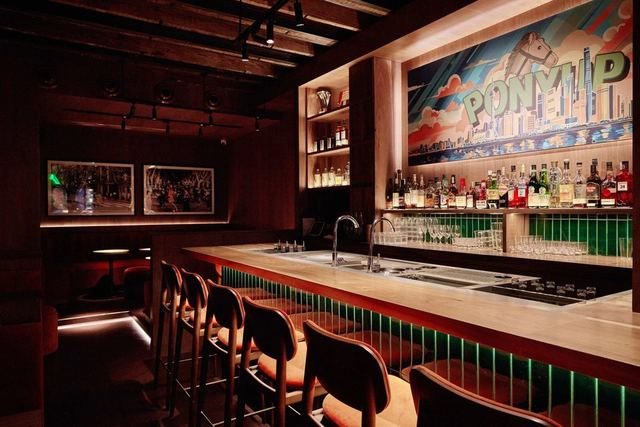
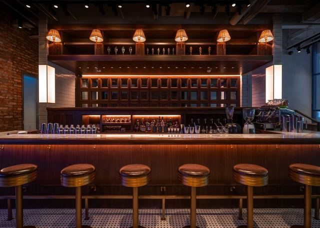
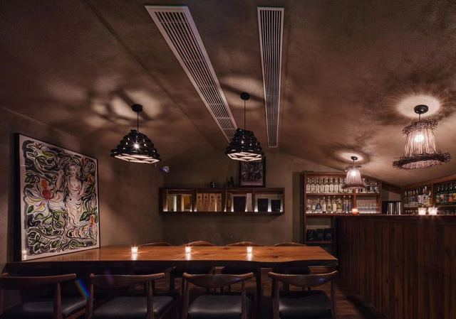
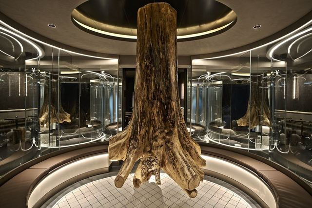
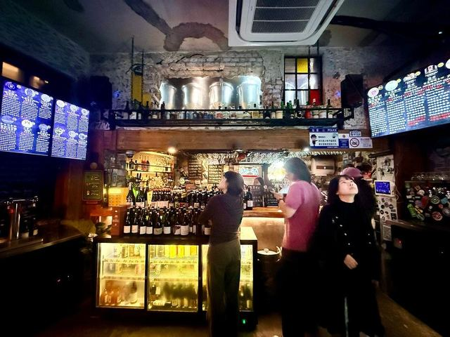
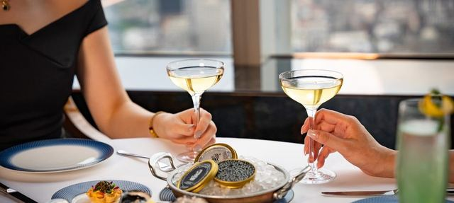
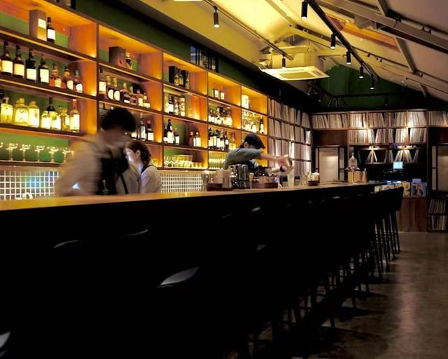

Neighbourhood cocktail bar · Huangpu
Pony Up
Asia's 50 Best Bars put it at no. 19 for 2026. Walk-ins only in a compact room, so go early.
CNY 181per person
CheckedRatings and hours readAmap (opens Amap, or its website, in a new tab)
Nightlife picks: picked for overall quality from named, dated reviews and lists (2024 to 2026). Where a dated event or a recent review was found it shows as “Evidence it is open”; where none shows, confirm the venue is trading before you go. The Clubs and Live music categories focus on music-led venues; bottle-service clubs were reviewed and left out. Venues open, close and move often: check the venue’s own WeChat or Instagram for the night you plan.
12 places

Neighbourhood cocktail bar · Huangpu
Asia's 50 Best Bars put it at no. 19 for 2026. Walk-ins only in a compact room, so go early.
CNY 181per person

Bespoke cocktail bar · Jing’an
Cocktails are tailored to your taste. Use Tongren Road; the old Fenyang Road address is obsolete.
CNY 178per person

Hidden-door cocktail bar · Huangpu
Enter via a bar-tools shop and a concealed bookcase; cocktail rooms are upstairs. Expect a queue.
about CNY 120Undated price

Japanese-influenced cocktail bar · Huangpu
CNA Luxury recommends the Sober Airways cocktail flight; ask for the Sakaba room when you book.
CNY 372per person

Agave cocktail bar · Huangpu
Several floors serve tequila and mezcal; ask for the cocktail-bar floor. Monday opening is unclear.
CNY 205per person

Italian aperitivo cocktail bar · Huangpu
Aperitivo in a two-floor Sinan Mansions house. Dianping showed it closed 12 and 13 Nov; check hours.
CNY 225per person

Italian aperitivo cocktail bar · Xuhui
Cocktails cost CNY 98 to 128 and the bar opens at 11:00. An October diner waited 20 minutes.
CNY 98 to 128Cocktails

Fermentation-focused cocktail bar · Huangpu
Fermented ingredients drive the cocktails; it reopened under its original operators in May 2026.
CNY 175per person

Hotel cocktail bar · Xuhui
French-influenced cocktails in a shikumen setting. The operator lists last orders 21:30, closing 23:00.

Bar · Beer specialist · Changning
Selected beers are CNY 65 on a rotating draught list. Menus are largely Chinese; bring translation.
CNY 65Selected beers

Bar · Hotel cocktails and skyline jazz · Pudong
The 52nd floor has Bund views and live jazz on a standing schedule. Dress smart casual.
CNY 297per person

Cocktail and vinyl listening bar · Huangpu
Funk, soul and jazz play on vinyl. Weekends start at 15:00; use 145B Nanchang Road.
CNY 174per person